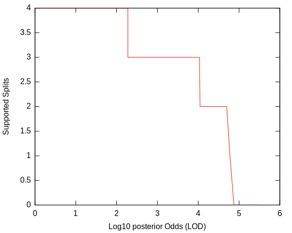
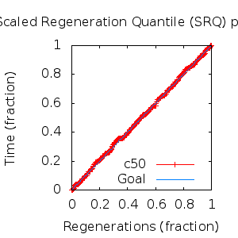
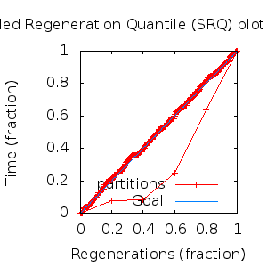

MCMC Post-hoc Analysis: 7 sequences
Data & Model
| Partition | Sequences | Lengths | Alphabet | Substitution Model | Indel Model | Scale Model |
|---|
| 1 |
E5_gammadelta_aa.fas |
134 - 165 |
Amino-Acids | S1 = lg08+f |
I1 = rs07 |
scale1 ~ gamma[0.5,2] |
Scalar variables
| Statistic | Median | 95% BCI | ACT | ESS | burnin | PSRF-CI80% | PSRF-RCF |
|---|
| prior |
-104.7 |
(-127.6, -86.84) |
29.33 |
9206 |
341
|
0.9996 | 1.002
|
| prior_A1 |
-90.29 |
(-111.8, -80.68) |
4.464 |
60483 |
229
|
1 | 1.002
|
| likelihood |
-1424 |
(-1439, -1409) |
4.253 |
63486 |
156
|
1 | 0.9982
|
| posterior |
-1530 |
(-1548, -1513) |
41.41 |
6520 |
446
|
1 | 1.004
|
| Heat.beta |
1 |
| | | | | |
| Scale[1] |
1.577 |
(0.6244, 3.238) |
1 |
270003 |
121
|
1 | 0.9999
|
| f:pi[A] |
0.0486 |
(0.02904, 0.07124) |
7.453 |
36225 |
290
|
1 | 1.004
|
| f:pi[R] |
0.01201 |
(0.002357, 0.02581) |
8.589 |
31434 |
777
|
1 | 1.004
|
| f:pi[N] |
0.03559 |
(0.01872, 0.05611) |
8.214 |
32872 |
510
|
0.9998 | 0.9962
|
| f:pi[D] |
0.05079 |
(0.02612, 0.07853) |
8.187 |
32977 |
446
|
0.9999 | 1
|
| f:pi[C] |
0.03756 |
(0.01969, 0.05883) |
8.678 |
31111 |
442
|
0.9997 | 0.9945
|
| f:pi[Q] |
0.04172 |
(0.02214, 0.06463) |
8.045 |
33562 |
563
|
1 | 0.9975
|
| f:pi[E] |
0.01676 |
(0.00462, 0.03349) |
8.855 |
30490 |
400
|
0.9997 | 0.9921
|
| f:pi[G] |
0.0445 |
(0.02171, 0.07121) |
7.875 |
34286 |
388
|
1 | 1.002
|
| f:pi[H] |
0.04375 |
(0.02407, 0.06677) |
7.758 |
34803 |
328
|
0.9998 | 0.998
|
| f:pi[I] |
0.06213 |
(0.04303, 0.08343) |
7.948 |
33972 |
146
|
0.9999 | 1.006
|
| f:pi[L] |
0.1743 |
(0.1365, 0.2145) |
7.475 |
36119 |
400
|
0.9999 | 1.001
|
| f:pi[K] |
0.03747 |
(0.01852, 0.06115) |
8.267 |
32660 |
215
|
1 | 0.9998
|
| f:pi[M] |
0.01332 |
(0.00554, 0.02284) |
8.375 |
32241 |
237
|
0.9993 | 1.001
|
| f:pi[F] |
0.05564 |
(0.03515, 0.07882) |
7.75 |
34838 |
471
|
0.9999 | 1.006
|
| f:pi[P] |
0.02488 |
(0.008741, 0.04528) |
8.154 |
33111 |
318
|
1 | 0.9971
|
| f:pi[S] |
0.04581 |
(0.02719, 0.06728) |
7.748 |
34849 |
366
|
1 | 0.9984
|
| f:pi[T] |
0.0945 |
(0.06685, 0.1248) |
7.66 |
35247 |
180
|
0.9997 | 1
|
| f:pi[W] |
0.02145 |
(0.007917, 0.03924) |
8.073 |
33444 |
355
|
0.9999 | 1
|
| f:pi[Y] |
0.04594 |
(0.02619, 0.06919) |
7.938 |
34012 |
365
|
1 | 1.005
|
| f:pi[V] |
0.07632 |
(0.05408, 0.101) |
7.491 |
36043 |
337
|
1 | 1.002
|
| rs07:mean_length |
4.293 |
(2.344, 7.438) |
1.89 |
142872 |
180
|
0.9997 | 0.9976
|
| rs07:log_rate |
-3.892 |
(-4.49, -3.279) |
1.53 |
176520 |
108
|
1 | 0.999
|
| |A1| |
171 |
(167, 175) |
6.147 |
43923 |
167 |
0.8333 | 0.9982
|
| #indels1 |
10 |
(8, 12) |
4.072 |
66300 |
63 |
0.6667 | 0.9995
|
| |indels1| |
39 |
(35, 50) |
4.8 |
56254 |
145 |
0.9 | 0.9984
|
| #substs1 |
197 |
(191, 200) |
4.691 |
57555 |
65 |
0.8333 | 0.9978
|
| Scale1*|T| |
1.59 |
(1.356, 1.839) |
1.67 |
161668 |
136
|
1 | 1
|
| |A| |
171 |
(167, 175) |
6.147 |
43923 |
167 |
0.8333 | 0.9982
|
| #indels |
10 |
(8, 12) |
4.072 |
66300 |
63 |
0.6667 | 0.9995
|
| |indels| |
39 |
(35, 50) |
4.8 |
56254 |
145 |
0.9 | 0.9984
|
| #substs |
197 |
(191, 200) |
4.691 |
57555 |
65 |
0.8333 | 0.9978
|
| |T| |
1.009 |
(0.3716, 1.9) |
1 |
270003 |
121
|
0.9999 | 0.9987
|
Phylogeny Distribution


Alignment Distribution
Partition 1
|
|
|
Diff |
|
Min. %identity |
# Sites |
Constant |
Informative |
| Initial |
FASTA |
HTML |
Diff |
|
14.1% |
165 |
10 (6.06%) |
121 (73.3%) |
| Best (WPD) |
FASTA |
HTML |
|
AU |
47.6% |
170 |
54 (31.8%) |
86 (50.6%) |
Mixing
Statistics: | scalar burnin | 777 | | scalar ESS | 6520 | | topological ESS | | | ASDSF | NA | | MSDSF | NA | | PSRF CI80% | 1 | | PSRF RCF | 1.006 |
|  |
Analysis
directory: /work/awillemsen/bali-phy/AlphaPVs_E5_aa_new
version: 3.3
| chain # | burnin | subsample | Iterations (after burnin) | command line | subdirectory |
|---|
| 1 |
10000 |
1 |
90000 |
bali-phy E5_gammadelta_aa.fas -s 87239 -i 100000 -n AlphaPVs_E5_gammadelta |
AlphaPVs_E5_gammadelta-1 |
| 2 |
10000 |
1 |
90000 |
bali-phy E5_gammadelta_aa.fas -s 26539 -i 100000 -n AlphaPVs_E5_gammadelta |
AlphaPVs_E5_gammadelta-2 |
| 3 |
10000 |
1 |
90000 |
bali-phy E5_gammadelta_aa.fas -s 52402 -i 100000 -n AlphaPVs_E5_gammadelta |
AlphaPVs_E5_gammadelta-3 |
| P(data|M) = -1437.923 +- 0.106
|
Complete sample: 9
topologies |
95% Bayesian credible interval: 4 topologies |
Model and priors
Tree (+priors)
| topology | ~ uniform on tree topologies |
| branch lengths | ~ iid[num_branches[T],gamma[0.5,div[2,num_branches[T]]]] |
Substitution model (+priors)
| S1 | = |
lg08+f
| f:pi | ~ | dirichlet_on[letters[@a],1]
|
|
Indel model (+priors)
| I1 | = |
rs07
| rs07:log_rate | ~ | laplace[-4,0.707]
|
| rs07:mean_length | ~ | exponential[10,1]
|
|
Scales (+priors)
{kind=link}
{kind=link}
{kind=link}
{kind=link}
{kind=link}
{kind=link}
{kind=link}
{kind=link}